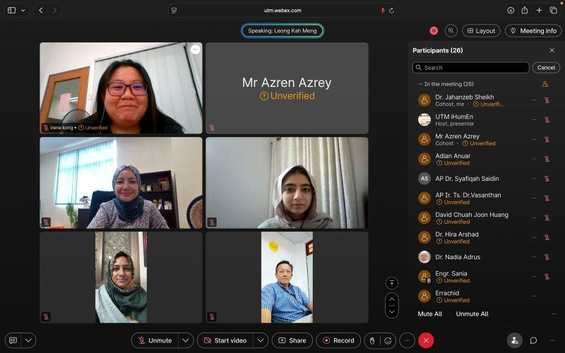

Side Quests
Hosting events, mentorship and public appearances.
Hosting Events
IEEE Webinars
Connector.global Webinars
Physical Events


Mentorship
Section Leader (Mentor) for Stanford Code in Place 2026
Private Mentorship
Subjects Taught
Mathematics, English (ESL), Computer Science
Examination Boards
Pearson Edexcel, Oxford AQA, Cambridge CAIE, AKUEB
Public Appearances
